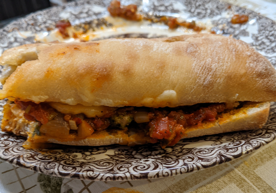

The Meatbolic Original Recipe

Ingredients
Steps
- Prepare your ground beef by mincing some garlic, onion and fresh cilantro and mixing it all together
in a bowl with some olive oil salt and pepper then letting it sit for about 30 minutes. After this you can roll the beef out into meatballs
- then crush, mince or grate your garlic and onion, saute the onions first in butter or your choice of olive olive
on medium-low heat and once the onions are aromatic add your garlic and stir occasionally till aromatic and golden
- Then while the garlic and onion are being sauteed add your desired spices or the ones mentioned above to the pan and stir
letting them fry a bit too, save basil and thyme for after adding the tomatoes.
- Next open your can of crushed tomatoes, scrape the bottom of your pan with a wooden utensil to get all the golden brown goodness off the bottom
and dump your tomatoes in.
- Let this simmer for about 25-30 minutes, optionally you can add tomato paste to the pan first and then add the whole tomatoes,
just make sure it fries first and no longer smells like raw tomato paste.
- While the sauce is simmering, observe how liquid it is and add water if too thick because it may burn, make sure there's another for it to cook.
typically letting it thicken in the last 10 minutes by no longer adding water. Also if you need to add water do so in very small amounts
- Then fry your meatballs in a hot pan and once they're seared on all sides throw them in the pot with the sauce so that they can finish with it
- In the last 8 minutes get a pan or skillet, put some oil and crank it up to medium high heat
- Once the oil is hot, lay your seasoned chicken breasts/thighs down and press them into the skillet hard, leave it undisturbed for 3-4 minutes then flip
- After flipping press it down again then cut one piece after taking it off the pan to make sure it is fully cooked
- If it isn't cook it for another 3-4 minutes on the first side.
Here are two more variations for this recipe that may interest you.
The chicken version The meatball version
home